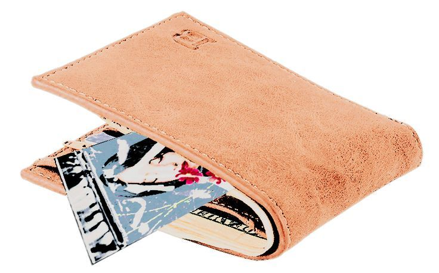

Solo con extender la mano alcanzas la cartera que te compraste hace ya seis años. Dentro encuentras varias tarjetas, todas inútiles, un par de billetes y una triste foto de una Ivy Walker en su debut.

Ahora está tan diferente… Aunque tienes sus rasgos tan bien perfilados en tu mente que eres capaz de relacionar a la idol de aquel entonces, una adolescente tímida y recatada, con la artista actual.
Ah… Eso empieza a poner los mecanismos de tu mente a trabajar. De pronto recuerdas a qué venía todo esto, por lo que buscas, al fin, la llave que abrirá el primer cajón. La encuentras en el diminuto bolsillo para las monedas. Sabes que ahí no se caería o perdería.